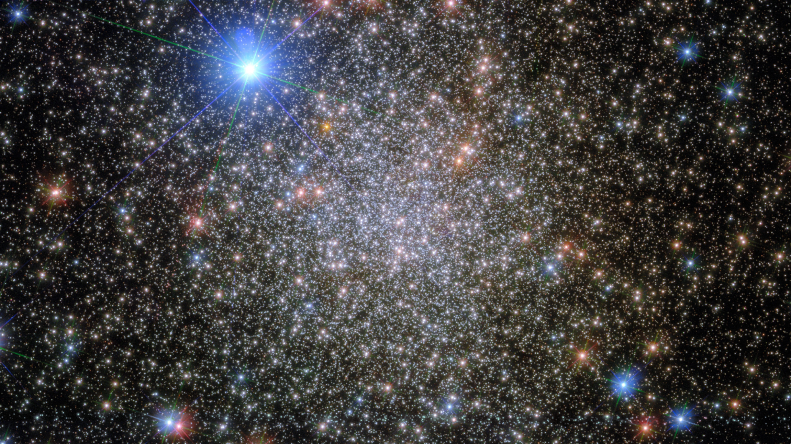

Stars
Stars are the most widely recognized astronomical objects, and represent the most fundamental building blocks of galaxies. The age, distribution, and composition of the stars in a galaxy trace the history, dynamics, and evolution of that galaxy. Moreover, stars are responsible for the manufacture and distribution of heavy elements such as carbon, nitrogen, and oxygen, and their characteristics are intimately tied to the characteristics of the planetary systems that may coalesce about them. Consequently, the study of the birth, life, and death of stars is central to the field of astronomy.

Stars formation
Stars are born within the clouds of dust and scattered throughout most galaxies. A familiar example of such as a dust cloud is the Orion Nebula. Turbulence deep within these clouds gives rise to knots with sufficient mass that the gas and dust can begin to collapse under its own gravitational attraction
History
Stars are born within the clouds of dust and scattered throughout most galaxies. A familiar example of such as a dust cloud is the Orion Nebula. Turbulence deep within these clouds gives rise to knots with sufficient mass that the gas and dust can begin to collapse under its own gravitational attraction.

Twinkling effects of stars
when the light from the stars enter the atmosphere they pass through denser and rarer mediums hence undergoing refraction continuously. As a result of this refraction the apparent positions of the stars are changing continuously and it seems that the stars are twinkling.